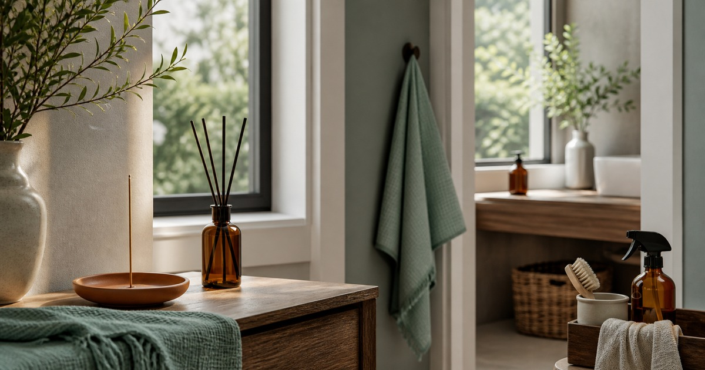

家裡的味道也需要整理：香氛、香品、清潔與除味用品怎麼分工
先清潔、通風，再談香氛與香品；把玄關、客廳、浴室和衣櫃的氣味問題分開整理。

家裡的味道很容易被忽略，直到一開門就先聞到鞋櫃、廚房或浴室的殘留氣味。香氛不該被拿來蓋過問題，它更適合放在清潔與通風之後，成為空間的最後一層氣氛。
先找味道來源，不急著點香
玄關多半來自鞋櫃、雨具與外套；客廳可能是布沙發、地毯和外食包裝；浴室則常和濕氣、排水與毛巾有關。來源不同，處理方式也不同。
先清潔、晾乾、通風，再考慮香氛。若一開始就用濃烈氣味覆蓋，只會讓空間變得更混濁。
- 玄關：鞋、傘、外套先分區。
- 客廳：布品與垃圾桶要定期處理。
- 浴室：濕毛巾和排水口優先檢查。
香氛、香品與除味用品各有位置
香氛適合放在需要柔和氣氛的位置，例如客廳、臥室外圍或玄關小角落。香品使用時更要注意通風、火源與家中成員狀況；除味用品則應該放在問題源附近，而不是當成裝飾。
如果家中有孩子、寵物、呼吸道敏感者或長時間關窗，任何帶有氣味的用品都要更保守使用，並依照商品說明和實際反應調整。
- 香氛：營造氣氛，不負責清潔。
- 香品：注意通風、火源與使用時間。
- 除味用品：放在味道來源附近。
Elite 嚴選
玄關、客廳、浴室不要用同一種味道
玄關適合清爽、存在感不太重的氣味，避免一進門就太濃。客廳可以選擇更柔和的香調，讓人停留時覺得乾淨。浴室則應該先重視乾燥與清潔，香味只做補充。
Lingscent、引香室 Aromatique Home、騰鼎沉檀香、鼎曨沉檀香與宜品香舖，可以從香氛、香品與居家儀式感方向參考；選購前仍應確認使用方式、燃燒或擴香條件，以及是否適合家中成員。
布品和收納櫃是隱形關鍵
很多居家氣味不是來自空氣，而是來自布品。窗簾、抱枕、地墊、沙發罩和毛巾如果長時間吸附濕氣或油煙，再好的香氛也救不了。
衣櫃和鞋櫃則要留意透氣。收納不是把東西關起來就好，潮濕季節更需要定期打開、擦拭和替換除濕用品。
- 布品固定清洗。
- 鞋櫃保留通風縫隙。
- 香氛不要直接接觸衣物或木作表面。
香味越少，越能留下記憶點
一個家不需要同時有很多味道。玄關一點清爽、客廳一點溫和、浴室保持乾淨，已經足夠形成舒服的印象。
若商品宣稱涉及除菌、淨化、舒眠或健康效果，請回到商品標示與公開資訊查證；日常使用以安全、通風與適量為原則。
同主題品牌參考
FAQ
這篇文章會直接推薦單一品牌嗎？
不會。本文會把不同品牌放回生活情境中比較，協助讀者判斷使用頻率、收納位置與商品頁資訊，而不是把單一品牌寫成唯一答案。
商品價格、活動或庫存可以以本文為準嗎？
不可以。價格、活動、庫存、規格與配送條件都可能變動，請以下單前看到的商品頁或店家頁公告為準。
如果內容涉及健康、寵物或照護用品，應該怎麼判斷？
請把本文視為一般生活採買整理，不要當成醫療、營養、獸醫或個人化建議；若有健康、照護或寵物狀況，應先詢問合格專業人員。
下一步建議
先把味道來源清乾淨，再用香氛與香品替不同空間留下輕盈的氣味層次。
重要警語
本文不宣稱淨化、療癒、除菌或健康效果；香品使用需依空間通風與商品說明判斷。
本文含品牌／商品導購連結；若你透過部分商品連結前往選購，Elite Fashion 可能取得合作收益。本文仍以編輯判斷與使用情境整理為主，價格、規格、活動與庫存請以商品頁公告為準。